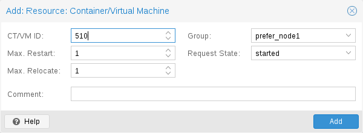
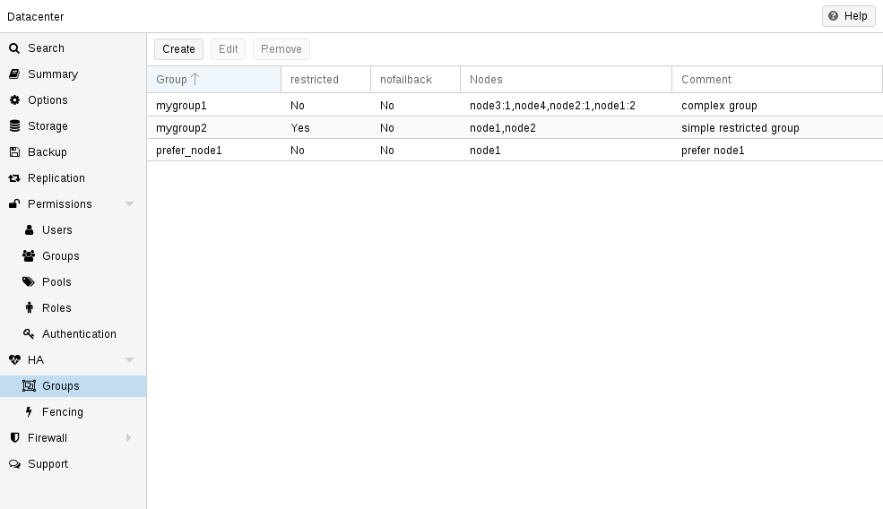
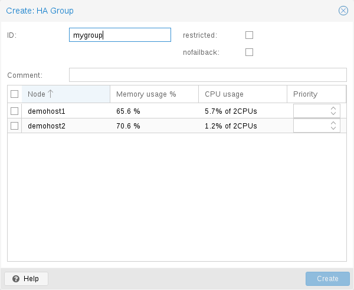

12. HA(고가용성)#
현대 사회는 네트워크를 통해 컴퓨터가 제공하는 정보에 크게 의존하고 있습니다. 모바일 디바이스는 사람들이 언제 어디서나 네트워크에 액세스할 수 있기 때문에 이러한 의존도를 더욱 증폭시켰습니다. 이러한 서비스를 제공하는 경우 대부분의 시간 동안 서비스를 이용할 수 있는 것이 매우 중요합니다.
가용성은 주어진 간격 동안 서비스를 사용할 수 있는 총 시간인 (A)와 간격의 길이인 (B)의 비율로 수학적으로 정의할 수 있습니다. 일반적으로 특정 연도의 가동 시간 대비 백분율로 표현됩니다.
 가용성 - 연간 다운타임
가용성 - 연간 다운타임
가용성 % |
연간 다운타임 |
|---|---|
99 |
3.65일 |
99.9 |
8.76시간 |
99.99 |
52.56분 |
99.999 |
5.26분 |
99.9999 |
31.5초 |
99.99999 |
3.15초 |
가용성을 높이는 방법에는 여러 가지가 있습니다. 가장 우아한 해결책은 소프트웨어를 다시 작성하여 여러 호스트에서 동시에 실행할 수 있도록 하는 것입니다. 소프트웨어 자체에 오류를 감지하고 장애 조치를 수행할 수 있는 방법이 있어야 합니다. 읽기 전용 웹 페이지만 제공하려는 경우에는 비교적 간단합니다. 하지만 소프트웨어를 직접 수정할 수 없기 때문에 일반적으로 복잡하고 때로는 불가능하기도 합니다. 다음 솔루션은 소프트웨어를 수정하지 않고도 작동합니다:
신뢰할 수 있는 ‘서버’ 컴포넌트 사용
동일한 기능을 가진 컴퓨터 구성요소라도 구성요소의 품질에 따라 신뢰성 수치가 달라질 수 있습니다. 대부분의 공급업체는 안정성이 높은 구성 요소를 “서버” 구성 요소로 판매하며, 일반적으로 더 높은 가격에 판매합니다.
단일 장애 지점 제거(중복 구성 요소)
무정전 전원 공급 장치(UPS) 사용
서버에 중복 전원 공급 장치 사용
ECC-RAM 사용
중복 네트워크 하드웨어 사용
로컬 스토리지에 RAID 사용
VM 데이터에 분산형 중복 스토리지 사용
다운타임 감소
신속한 관리자 액세스(연중무휴 24시간)
예비 부품의 가용성(Proxmox VE 클러스터의 다른 노드)
자동 오류 감지(
ha-manager에서 제공)자동 페일오버(
ha-manager에서 제공)
Proxmox VE와 같은 가상화 환경은 ‘하드웨어’ 종속성을 제거하기 때문에 고가용성을 훨씬 쉽게 달성할 수 있습니다. 또한 중복 스토리지 및 네트워크 장치의 설정과 사용을 지원하므로 한 호스트에 장애가 발생하면 클러스터 내의 다른 호스트에서 해당 서비스를 간단히 시작할 수 있습니다.
더 좋은 점은 Proxmox VE가 ha-manager라는 소프트웨어 스택을 제공하므로 이를 자동으로 수행할 수 있다는 것입니다. 자동으로 오류를 감지하고 자동 페일오버를 수행할 수 있습니다.
Proxmox VE ha-manager는 “자동화된” 관리자처럼 작동합니다. 먼저, 관리할 리소스(VM, 컨테이너 등)를 구성합니다. 그런 다음 ha-manager가 올바른 기능을 관찰하고 오류 발생 시 다른 노드로의 서비스 장애 조치를 처리합니다. ha-manager는 서비스를 시작, 중지, 재배치 및 마이그레이션할 수 있는 일반 사용자 요청도 처리할 수 있습니다.
하지만 고가용성에는 대가가 따릅니다. 고품질 구성 요소는 더 비싸고, 이중화하면 비용이 최소 두 배로 증가합니다. 예비 부품을 추가하면 비용이 더 증가합니다. 따라서 이점을 신중하게 계산하고 이러한 추가 비용과 비교해야 합니다.
12.1. 요구 사항#
HA를 시작하기 전에 다음 요구 사항을 충족해야 합니다:
최소 3개의 클러스터 노드(안정적인 쿼럼을 확보하기 위해)
VM 및 컨테이너를 위한 공유 스토리지
하드웨어 이중화(모든 곳에)
신뢰할 수 있는 “서버” 구성 요소 사용
하드웨어 워치독 - 사용할 수 없는 경우 Linux 커널 소프트웨어 워치독(softdog)으로 돌아갑니다.
하드웨어 펜싱 장치(옵션)
12.2. 리소스#
ha-manager가 처리하는 기본 관리 단위를 리소스라고 부릅니다. 리소스(“서비스”라고도 함)는 리소스 유형과 유형별 ID(예: vm:100)로 구성된 서비스 ID(SID)로 고유하게 식별됩니다. 이 예는 ID가 100인 vm(가상 머신) 유형의 리소스입니다.
현재로서는 가상 머신과 컨테이너라는 두 가지 중요한 리소스 유형이 있습니다. 여기서 한 가지 기본적인 아이디어는 관련 소프트웨어를 이러한 가상 머신이나 컨테이너에 번들로 묶을 수 있으므로 rgmanager에서 했던 것처럼 다른 서비스에서 하나의 큰 서비스를 구성할 필요가 없다는 것입니다. 일반적으로 HA 관리 리소스는 다른 리소스에 의존해서는 안 됩니다.
12.3. 관리 작업#
이 섹션에서는 일반적인 관리 작업에 대한 간략한 개요를 제공합니다. 첫 번째 단계는 리소스에 대해 HA를 사용 설정하는 것입니다. 리소스를 HA 리소스 구성에 추가하면 됩니다. 이 작업은 GUI를 사용하거나 명령줄 도구를 사용하여 간단히 수행할 수 있습니다:
# ha-manager add vm:100
이제 HA 스택이 리소스를 시작하고 계속 실행하려고 시도합니다. “요청된” 리소스 상태를 구성할 수 있다는 점에 유의하세요. 예를 들어 HA 스택이 리소스를 중지하도록 설정할 수 있습니다:
# ha-manager set vm:100 --state stopped
를 설정하고 나중에 다시 시작할 수 있습니다:
# ha-manager set vm:100 --state started
일반 VM 및 컨테이너 관리 명령을 사용할 수도 있습니다. 다음과 같이 명령을 자동으로 HA 스택으로 전달합니다.
# qm start 100
는 요청된 상태를 시작됨으로 설정하기만 하면 됩니다. 요청된 상태를 중지 상태로 설정하는 qm stop도 마찬가지입니다.
현재 HA 리소스 구성을 보려면 다음을 사용하세요:
# ha-manager config
vm:100
state stopped
그리고 실제 HA 관리자 및 리소스 상태를 확인할 수 있습니다:
# ha-manager status
quorum OK
master node1 (active, Wed Nov 23 11:07:23 2016)
lrm elsa (active, Wed Nov 23 11:07:19 2016)
service vm:100 (node1, started)
다른 노드로 리소스 마이그레이션을 시작할 수도 있습니다:
# ha-manager migrate vm:100 node2
이 경우 온라인 마이그레이션을 사용하며 VM을 계속 실행하려고 시도합니다. 온라인 마이그레이션은 네트워크를 통해 사용된 모든 메모리를 전송해야 하므로 VM을 중지한 다음 새 노드에서 다시 시작하는 것이 더 빠른 경우가 있습니다. 이 작업은 relocate 명령을 사용하여 수행할 수 있습니다:
# ha-manager relocate vm:100 node2
마지막으로 다음 명령을 사용하여 HA 구성에서 리소스를 제거할 수 있습니다:
# ha-manager remove vm:100
그러나 모든 HA 관련 작업은 GUI에서 수행할 수 있으므로 명령줄을 전혀 사용할 필요가 없습니다.
12.4. 작동 방식#
이 섹션에서는 Proxmox VE HA 매니저 내부에 대한 자세한 설명을 제공합니다. 관련된 모든 데몬과 이들이 함께 작동하는 방식에 대해 설명합니다. HA를 제공하기 위해 각 노드에서 두 개의 데몬이 실행됩니다:
pve-ha-lrm
로컬 노드에서 실행 중인 서비스를 제어하는 로컬 리소스 관리자(LRM)입니다. 현재 관리자 상태 파일에서 서비스에 대한 요청된 상태를 읽고 각 명령을 실행합니다.
pve-ha-crm
클러스터 리소스 관리자(CRM)로, 클러스터 전체에 대한 결정을 내립니다. LRM에 명령을 보내고, 결과를 처리하며, 장애가 발생하면 리소스를 다른 노드로 이동합니다. CRM은 노드 펜싱도 처리합니다.
LRM 및 CRM의 잠금 기능
잠금은 당사의 분산 구성 파일 시스템(pmxcfs)에서 제공합니다. 각 LRM이 한 번만 활성화되어 작동하도록 보장하는 데 사용됩니다. LRM은 잠금을 유지할 때만 작업을 실행하므로, 잠금을 획득할 수 있는 경우 실패한 노드를 펜싱된 것으로 표시할 수 있습니다. 그러면 현재 알려지지 않은 장애 노드의 간섭 없이 장애가 발생한 HA 서비스를 안전하게 복구할 수 있습니다. 이 모든 것은 현재 관리자 마스터 잠금을 보유하고 있는 CRM이 감독합니다.
12.4.1. 서비스 상태#
CRM은 서비스 상태 열거형을 사용하여 현재 서비스 상태를 기록합니다. 이 상태는 GUI에 표시되며 ha-manager 명령줄 도구를 사용하여 쿼리할 수 있습니다:
# ha-manager status
quorum OK
master elsa (active, Mon Nov 21 07:23:29 2016)
lrm elsa (active, Mon Nov 21 07:23:22 2016)
service ct:100 (elsa, stopped)
service ct:102 (elsa, started)
service vm:501 (elsa, started)
다음은 가능한 상태 목록입니다:
stopped
서비스가 중지됨(LRM에서 확인됨). 중지된 서비스가 여전히 실행 중인 것을 LRM이 감지하면 다시 중지합니다.
request_stop
서비스를 중지해야 합니다. CRM이 LRM의 확인을 기다립니다.
stopping
보류 중인 중지 요청입니다. 그러나 CRM이 지금까지 요청을 받지 못했습니다.
started
서비스가 활성 상태이며 아직 실행 중이 아니라면 LRM이 최대한 빨리 시작해야 합니다. 서비스가 실패하여 실행 중이 아닌 것으로 감지되면 LRM이 다시 시작합니다(시작 실패 정책 참조).
starting
보류 중인 시작 요청입니다. 서비스가 실행 중이라는 확인을 LRM으로부터 받지 못했습니다.
fence
서비스 노드가 쿼터 클러스터 파티션 내에 있지 않으므로 노드 펜싱을 기다립니다(펜싱 참조). 노드가 성공적으로 펜싱되면 서비스가 복구에 배치됩니다.
recovery
서비스 복구를 기다립니다. HA 관리자가 서비스를 실행할 수 있는 새 노드를 찾으려고 시도합니다. 이 검색은 온라인 및 쿼터 노드 목록뿐만 아니라 서비스가 그룹 구성원인지 여부와 해당 그룹이 어떻게 제한되는지에 따라 달라집니다. 사용 가능한 새 노드가 발견되는 즉시 서비스가 해당 노드로 이동되고 처음에는 중지 상태가 됩니다. 새 노드가 실행되도록 구성되어 있으면 그렇게 됩니다.
freeze
서비스 상태를 건드리지 마세요. 노드를 재부팅하거나 LRM 데몬을 다시 시작할 때 이 상태를 사용합니다(패키지 업데이트 참조).
ignored
서비스가 HA에 의해 전혀 관리되지 않는 것처럼 동작합니다. HA 구성에서 서비스를 제거하지 않고 일시적으로 서비스에 대한 완전한 제어가 필요한 경우에 유용합니다.
migrate
서비스(라이브)를 다른 노드로 마이그레이션합니다.
error
LRM 오류로 인해 서비스를 사용할 수 없습니다. 수동 개입이 필요합니다(오류 복구 참조).
queued
서비스가 새로 추가되었는데 CRM에서 아직 보지 못했습니다.
disabled
서비스가 중지되고 비활성화된 것으로 표시되었습니다.
12.4.2. 로컬 리소스 관리자#
로컬 리소스 관리자(pve-ha-lrm)는 부팅 시 데몬으로 시작되며 HA 클러스터가 정원이 되어 클러스터 전체 잠금이 작동할 때까지 기다립니다.
세 가지 상태가 있을 수 있습니다:
wait for agent lock
LRM은 독점 잠금을 기다립니다. 이 상태는 구성된 서비스가 없는 경우 유휴 상태로도 사용됩니다.
active
LRM이 독점 잠금을 유지하고 있으며 서비스가 구성되어 있습니다.
lost agent lock
LRM이 잠금을 잃어버렸으며, 이는 장애가 발생하여 쿼럼이 손실되었음을 의미합니다.
LRM이 활성 상태가 되면 /etc/pve/ha/manager_status에서 매니저 상태 파일을 읽고 소유한 서비스에 대해 실행해야 하는 명령을 결정합니다. 워커가 시작되는 각 명령에 대해 이러한 워커는 병렬로 실행되며 기본적으로 최대 4개로 제한됩니다. 이 기본 설정은 데이터센터 구성 키 max_worker를 통해 변경할 수 있습니다. 완료되면 워커 프로세스가 수집되고 그 결과가 CRM에 저장됩니다.
최대 동시 작업자 조정 팁
최대 4명의 동시 작업자라는 기본값은 특정 설정에 적합하지 않을 수 있습니다. 예를 들어, 4명의 실시간 마이그레이션이 동시에 발생할 수 있으며, 이로 인해 느린 네트워크 및/또는 대용량(메모리 사용량) 서비스로 인해 네트워크 정체가 발생할 수 있습니다. 또한 최악의 경우max_worker값을 낮추는 한이 있더라도 혼잡을 최소화해야 합니다. 반대로 특히 강력한 하이엔드 설정이 있는 경우 이 값을 높이는 것이 좋습니다.
CRM이 요청하는 각 명령은 UID로 고유하게 식별할 수 있습니다. 작업자가 작업을 완료하면 그 결과가 처리되어 LRM 상태 파일 /etc/pve/nodes/<nodename>/lrm_status에 기록됩니다. 거기에서 CRM은 이를 수집하여 상태 머신(각각 명령 출력에 따라)이 작동하도록 할 수 있습니다.
CRM과 LRM 간의 각 서비스에 대한 작업은 일반적으로 항상 동기화됩니다. 즉, CRM이 UID로 고유하게 표시된 상태를 요청하면 LRM이 이 작업을 한 번 실행하고 동일한 UID로 식별할 수 있는 결과를 다시 기록합니다. 이는 LRM이 오래된 명령을 실행하지 않도록 하기 위해 필요합니다. 이 동작의 유일한 예외는 중지(stop) 및 오류(error) 명령이며, 이 두 명령은 생성된 결과에 의존하지 않고 중지 상태의 경우 항상 실행되고 오류 상태의 경우 한 번만 실행됩니다.
HA 스택은 모든 작업을 기록합니다. 이는 클러스터에서 어떤 일이 왜 발생하는지 이해하는 데 도움이 됩니다. 여기서는 두 데몬, 즉 LRM과 CRM이 무엇을 했는지 확인하는 것이 중요합니다. 서비스가 있는 노드에서는journalctl -u pve-ha-lrm을 사용하고 현재 마스터인 노드에서는 동일한 명령으로 pve-ha-crm을 사용할 수 있습니다.
12.4.3. 클러스터 리소스 관리자#
클러스터 리소스 관리자(pve-ha-crm)는 각 노드에서 시작하여 한 번에 한 노드만 보유할 수 있는 관리자 잠금을 기다립니다. 관리자 잠금을 성공적으로 획득한 노드는 CRM 마스터로 승격됩니다.
다음 세 가지 상태가 될 수 있습니다.
wait for agent lock
CRM이 배타적 잠금을 기다립니다. 서비스가 구성되지 않은 경우 유휴 상태로도 사용됩니다.
active
CRM이 배타적 잠금을 보유하고 서비스가 구성됩니다.
lost agent lock
CRM이 잠금을 잃었습니다. 즉, 오류가 발생하여 쿼럼이 손실되었습니다.
주된 작업은 고가용성으로 구성된 서비스를 관리하고 항상 요청된 상태를 적용하는 것입니다. 예를 들어, 요청된 상태가 시작된 서비스는 아직 실행 중이 아니면 시작됩니다. 충돌하면 자동으로 다시 시작됩니다. 따라서 CRM은 LRM이 실행해야 하는 작업을 지시합니다.
노드가 클러스터 쿼럼을 떠나면 상태가 알 수 없음으로 변경됩니다. 현재 CRM이 실패한 노드의 잠금을 보호할 수 있는 경우, 서비스가 도난당하고 다른 노드에서 다시 시작됩니다.
클러스터 멤버가 더 이상 클러스터 쿼럼에 없다고 판단하면 LRM은 새 쿼럼이 형성될 때까지 기다립니다. 쿼럼이 없는 한 노드는 워치독을 재설정할 수 없습니다. 그러면 워치독이 시간 초과된 후 재부팅이 트리거됩니다(60초 후에 발생).
12.5. HA 시뮬레이터#

HA 시뮬레이터를 사용하면 Proxmox VE HA 솔루션의 모든 기능을 테스트하고 학습할 수 있습니다.
기본적으로 시뮬레이터를 사용하면 6개의 VM이 있는 실제 3노드 클러스터의 동작을 보고 테스트할 수 있습니다. 추가 VM이나 컨테이너를 추가하거나 제거할 수도 있습니다.
실제 클러스터를 설정하거나 구성할 필요가 없으며 HA 시뮬레이터는 바로 실행됩니다.
apt로 설치:
apt install pve-ha-simulator
다른 Proxmox VE 패키지 없이도 모든 Debian 기반 시스템에 패키지를 설치할 수 있습니다. 그러려면 패키지를 다운로드하여 설치를 위해 실행하려는 시스템에 복사해야 합니다. 로컬 파일 시스템에서 apt로 패키지를 설치하면 필요한 종속성도 해결됩니다.
원격 컴퓨터에서 시뮬레이터를 시작하려면 현재 시스템으로 X11 리디렉션이 있어야 합니다.
Linux 컴퓨터를 사용하는 경우 다음을 사용할 수 있습니다.
ssh root@<IPofPVE> -Y
Windows에서는 mobaxterm과 함께 작동합니다.
시뮬레이터가 설치된 기존 Proxmox VE에 연결하거나 로컬 Debian 기반 시스템에 수동으로 설치한 후 다음과 같이 시도해 볼 수 있습니다.
먼저 시뮬레이터가 현재 상태를 저장하고 기본 구성을 쓰는 작업 디렉토리를 만들어야 합니다.
mkdir working
그런 다음 생성된 디렉토리를 pve-ha-simulator에 매개변수로 전달하기만 하면 됩니다.
pve-ha-simulator working/
그런 다음 시뮬레이션된 HA 서비스를 시작, 중지, 마이그레이션하거나 노드 장애 시 어떤 일이 발생하는지 확인할 수도 있습니다.
12.6. 구성#
HA 스택은 Proxmox VE API에 잘 통합되어 있습니다. 예를 들어, HA는 ha-manager 명령줄 인터페이스 또는 Proxmox VE 웹 인터페이스를 통해 구성할 수 있습니다. 두 인터페이스 모두 HA를 관리하는 쉬운 방법을 제공합니다. 자동화 도구는 API를 직접 사용할 수 있습니다.
모든 HA 구성 파일은 /etc/pve/ha/에 있으므로 클러스터 노드에 자동으로 배포되고 모든 노드는 동일한 HA 구성을 공유합니다.
12.6.1. 리소스#

리소스 구성 파일 /etc/pve/ha/resources.cfg는 ha-manager가 관리하는 리소스 목록을 저장합니다. 해당 목록 내의 리소스 구성은 다음과 같습니다.
<type>: <name>
<property> <value>
...
리소스 유형으로 시작하고 그 뒤에 콜론으로 구분된 리소스 특정 이름이 옵니다. 이를 합치면 HA 리소스 ID가 되는데, 모든 ha-manager 명령에서 리소스를 고유하게 식별하는 데 사용됩니다(예: vm:100 또는 ct:101). 다음 줄에는 추가 속성이 들어 있습니다.
comment: <string>
설명.
group: <string>
HA 그룹 식별자.
max_relocate:
(0 - N) (default = 1)서비스가 시작되지 않을 때 서비스 재배치 시도의 최대 횟수.
max_restart: <integer> (0 - N)(default = 1)
시작이 실패한 후 노드에서 서비스를 다시 시작하려는 최대 시도 횟수.
state: <disabled | enabled | ignored | started | stopped>(default = started)
요청된 리소스 상태.
CRM은 이 상태를 읽고 그에 따라 동작합니다. enabled는 started의 별칭일 뿐입니다.
started
CRM은 리소스를 시작하려고 시도합니다. 서비스 상태는 시작이 성공한 후 시작으로 설정됩니다.
노드가 실패하거나 시작이 실패하면 리소스를 복구하려고 시도합니다.
모든 것이 실패하면 서비스 상태가 오류(error)로 설정됩니다.
stopped
CRM은 리소스를 중지된 상태로 유지하려고 하지만 노드 장애 시에도 리소스를 재배치하려고 합니다.
disabled
CRM은 리소스를 중지된 상태로 두려고 하지만 노드 장애 시에도 리소스를 재배치하려고 하지 않습니다.
이 상태의 주요 목적은 오류 복구입니다. 왜냐하면 오류 상태에서 리소스를 옮길 수 있는 유일한 방법이기 때문입니다.
ignored
리소스가 관리자 상태에서 제거되므로 CRM과 LRM이 더 이상 리소스에 영향을 미치지 않습니다. 이 리소스에 영향을 미치는 모든 {pve} API 호출이 실행되어 HA 스택을 직접 우회합니다.
소스가 이 상태인 동안 CRM 명령은 삭제됩니다. 노드 장애 시 리소스가 재배치되지 않습니다.
다음은 하나의 VM과 하나의 컨테이너가 있는 실제 사례입니다. 보시다시피, 해당 파일의 구문은 정말 간단하므로 좋아하는 편집기를 사용하여 해당 파일을 읽거나 편집할 수도 있습니다.
구성 예시(/etc/pve/ha/resources.cfg)
vm: 501
state started
max_relocate 2
ct: 102
# 참고: 모든 것에 기본 설정 사용

위의 구성은 ha-manager 명령줄 도구를 사용하여 생성되었습니다.
# ha-manager add vm:501 --state started --max_relocate 2
# ha-manager add ct:102
12.6.2. 그룹#

HA 그룹 구성 파일 /etc/pve/ha/groups.cfg는 클러스터 노드 그룹을 정의하는 데 사용됩니다. 리소스는 해당 그룹의 멤버에서만 실행되도록 제한될 수 있습니다. 그룹 구성은 다음과 같습니다.
group: <group>
nodes <node_list>
<property> <value>
...
comment:
설명.
nodes:
[: ]{, [: ]}* 클러스터 노드 멤버 목록으로, 각 노드에 우선순위를 지정할 수 있습니다.
그룹에 바인딩된 리소스는 가장 높은 우선순위를 가진 사용 가능한 노드에서 실행됩니다.
가장 높은 우선순위 클래스에 노드가 더 많으면 해당 노드에 서비스가 분산됩니다. 우선순위는 상대적인 의미만 갖습니다.
nofailback:
(default = 0) CRM은 가장 높은 우선순위를 가진 노드에서 서비스를 실행하려고 합니다.
우선순위가 더 높은 노드가 온라인이 되면 CRM은 해당 노드로 서비스를 마이그레이션합니다.
nofailback을 활성화하면 이러한 동작이 방지됩니다.
restricted:
(default = 0) 제한된 그룹에 바인딩된 리소스는 그룹에서 정의한 노드에서만 실행될 수 있습니다.
그룹 노드 멤버가 온라인이 아니면 리소스는 중지 상태가 됩니다.
제한 없는 그룹의 리소스는 모든 그룹 멤버가 오프라인인 경우 모든 클러스터 노드에서 실행될 수 있지만 그룹 멤버가 온라인이 되면 다시 마이그레이션됩니다.
멤버가 한 명뿐인 제한 없는 그룹을 사용하여 선호하는 노드 동작을 구현할 수 있습니다.

일반적인 요구 사항은 리소스가 특정 노드에서 실행되어야 한다는 것입니다. 일반적으로 리소스는 다른 노드에서 실행될 수 있으므로 단일 멤버가 있는 제한 없는 그룹을 정의할 수 있습니다.
# ha-manager groupadd choose_node1 --nodes node1
더 큰 클러스터의 경우 더 자세한 장애 조치 동작을 정의하는 것이 좋습니다. 예를 들어, 가능하다면 node1 에서 서비스 세트를 실행하고 싶을 수 있습니다. node1을 사용할 수 없는 경우, node2 와 node3 에서 동일하게 분할하여 실행하고 싶을 수 있습니다 . 해당 노드도 실패하면, 서비스는 node4 에서 실행해야 합니다 . 이를 위해 노드 목록을 다음과 같이 설정할 수 있습니다.
# ha-manager groupadd mygroup1 -nodes "node1:2,node2:1,node3:1,node4"
또 다른 사용 사례는 리소스가 특정 노드에서만 사용 가능한 다른 리소스를 사용하는 경우입니다. 예를 들어 node1 과 node2 라고 합시다 . HA 관리자가 다른 노드를 사용하지 않도록 해야 하므로 해당 노드로 제한된 그룹을 만들어야 합니다.
# ha-manager groupadd mygroup2 -nodes "node1,node2" -restricted
위 명령은 다음과 같은 그룹 구성 파일을 생성했습니다.
구성 예시(/etc/pve/ha/groups.cfg)
group: prefer_node1
nodes node1
group: mygroup1
nodes node2:1,node4,node1:2,node3:1
group: mygroup2
nodes node2,node1
restricted 1
nofailback 옵션 은 주로 관리 작업 중에 원치 않는 리소스 이동을 방지하는 데 유용합니다. 예를 들어, 그룹에서 가장 높은 우선순위가 없는 노드로 서비스를 마이그레이션해야 하는 경우 nofailback 옵션을 설정하여 HA 관리자에게 이 서비스를 즉시 다시 이동하지 말라고 알려야 합니다.
또 다른 시나리오는 서비스가 펜싱되어 다른 노드로 복구된 경우입니다. 관리자는 펜싱된 노드를 복구하려고 시도하고 다시 온라인으로 전환하여 실패 원인을 조사하고 다시 안정적으로 실행되는지 확인합니다. nofailback 플래그를 설정하면 복구된 서비스가 펜싱된 노드로 바로 돌아가는 것을 방지합니다.
12.7. 펜싱#
노드 장애 시 펜싱은 오류가 있는 노드가 오프라인 상태가 되도록 보장합니다. 이는 다른 노드에서 복구될 때 리소스가 두 번 실행되지 않도록 하는 데 필요합니다. 이는 정말 중요한 작업인데, 이것이 없다면 다른 노드에서 리소스를 복구할 수 없기 때문입니다.
노드가 펜싱되지 않았다면, 공유 리소스에 여전히 액세스할 수 있는 알 수 없는 상태가 될 것입니다. 이것은 정말 위험합니다! 스토리지 네트워크를 제외한 모든 네트워크가 끊어졌다고 상상해 보세요. 이제 공용 네트워크에서 접근할 수 없지만 VM은 여전히 실행되고 공유 스토리지에 씁니다.
그런 다음 다른 노드에서 이 VM을 시작하면 두 노드에서 모두 쓰기 때문에 위험한 경쟁 조건이 발생합니다. 이러한 조건은 모든 VM 데이터를 파괴하고 전체 VM을 사용할 수 없게 만들 수 있습니다. 저장소가 여러 마운트로부터 보호하는 경우에도 복구가 실패할 수 있습니다.
12.7.1. Proxmox VE 펜스#
노드를 펜싱하는 방법에는 여러 가지가 있는데, 예를 들어 노드의 전원을 차단하거나 통신을 완전히 비활성화하는 펜스 장치가 있습니다. 이러한 펜싱 장치는 종종 매우 비싸고 시스템에 중요한 구성 요소를 추가로 가져오는데, 이러한 펜싱 장치가 고장나면 서비스를 복구할 수 없기 때문입니다.
따라서 우리는 추가적인 외부 하드웨어가 필요 없는 더 간단한 펜싱 방법을 통합하고자 했습니다. 이는 워치독 타이머를 사용하여 수행할 수 있습니다.
가능한 펜싱 방법
외부 전원 스위치
스위치에서 전체 네트워크 트래픽을 비활성화하여 노드를 격리합니다.
감시 타이머를 사용한 자체 펜싱
워치독 타이머는 마이크로컨트롤러의 시작 이래로 중요하고 신뢰할 수 있는 시스템에서 널리 사용되었습니다. 이들은 종종 컴퓨터 오작동을 감지하고 복구하는 데 사용되는 간단하고 독립적인 집적 회로입니다.
정상 작동 중에 ha-manager는 워치독 타이머를 정기적으로 재설정하여 경과를 방지합니다. 하드웨어 오류나 프로그램 오류로 인해 컴퓨터가 워치독을 재설정하지 못하면 타이머가 경과하여 전체 서버를 재설정(재부팅)합니다.
최근 서버 마더보드에는 종종 이러한 하드웨어 워치독이 포함되어 있지만, 이를 구성해야 합니다. 워치독을 사용할 수 없거나 구성하지 않으면 Linux 커널 소프트독(softdog) 으로 돌아갑니다 . 여전히 안정적이지만 서버 하드웨어와 독립적이지 않으므로 하드웨어 워치독보다 안정성이 낮습니다.
12.7.2. 하드웨어 워치독 구성#
기본적으로 모든 하드웨어 워치독 모듈은 보안상의 이유로 차단됩니다. 올바르게 초기화되지 않으면 장전된 총과 같습니다. 하드웨어 워치독을 활성화하려면 /etc/default/pve-ha-manager 에서 로드할 모듈을 지정해야 합니다 . 예:
# select watchdog module (default is softdog)
WATCHDOG_MODULE=iTCO_wdt
이 구성은 시작 시 지정된 모듈을 로드하는 watchdog-mux 서비스 에서 읽습니다 .
12.7.3. 펜싱 서비스 복구#
노드에 장애가 발생하고 펜싱이 성공한 경우 CRM은 장애가 발생한 노드의 서비스를 아직 온라인 상태인 노드로 이동하려고 시도합니다.
해당 서비스가 복구되는 노드 선택은 리소스 그룹 설정, 현재 활성화된 노드 목록 및 해당 활성 서비스 수에 따라 영향을 받습니다.
CRM은 먼저 사용자가 선택한 노드( 그룹 설정 에서)와 사용 가능한 노드의 교차점에서 집합을 구축합니다 . 그런 다음 가장 높은 우선순위를 가진 노드의 하위 집합을 선택하고 마지막으로 가장 낮은 활성 서비스 수를 가진 노드를 선택합니다. 이렇게 하면 노드가 과부하될 가능성이 최소화됩니다.
12.8. 시작 실패 정책#
시작 실패 정책은 서비스가 노드에서 한 번 이상 시작되지 않으면 적용됩니다. 이 정책은 같은 노드에서 재시작을 트리거해야 하는 빈도와 서비스를 재배치해야 하는 빈도를 구성하는 데 사용할 수 있으므로 다른 노드에서 시작하려고 시도합니다. 이 정책의 목적은 특정 노드에서 공유 리소스를 일시적으로 사용할 수 없는 상황을 피하는 것입니다. 예를 들어, 네트워크 문제로 인해 공유 스토리지를 더 이상 quorate 노드에서 사용할 수 없지만 다른 노드에서는 여전히 사용할 수 있는 경우 재배치 정책은 서비스를 여전히 시작할 수 있도록 허용합니다.
각 리소스에 맞게 구성할 수 있는 두 가지 서비스 시작 복구 정책 설정이 있습니다.
max_restart
실제 노드에서 실패한 서비스를 다시 시작하기 위한 최대 시도 횟수입니다. 기본값은 1로 설정됩니다.
max_relocate
서비스를 다른 노드로 재배치하려는 최대 시도 횟수입니다. 재배치는 실제 노드에서 max_restart 값을 초과한 후에만 발생합니다. 기본값은 1로 설정됩니다.
12.9. 오류 복구#
모든 시도 후에도 서비스 상태를 복구할 수 없으면 오류 상태로 전환됩니다. 이 상태에서는 서비스가 HA 스택에 더 이상 영향을 받지 않습니다. 유일한 해결책은 서비스를 비활성화하는 것입니다.
# ha-manager set vm:100 --state disabled
이 작업은 웹 인터페이스에서도 수행할 수 있습니다.
오류 상태에서 복구하려면 다음을 수행해야 합니다.
리소스를 안전하고 일관된 상태로 되돌립니다(예: 서비스를 중지할 수 없는 경우 해당 프로세스를 종료합니다)
오류 플래그를 제거하려면 리소스를 비활성화하세요.
이 실패를 초래한 오류를 수정하세요
모든 오류를 수정한 후 서비스를 다시 시작하도록 요청할 수 있습니다.
12.10. 패키지 업데이트#
ha-manager를 업데이트할 때는 여러 가지 이유로 한꺼번에 모든 것을 하지 말고, 한 노드씩 차례로 업데이트해야 합니다. 첫째, 소프트웨어를 철저히 테스트하지만 특정 설정에 영향을 미치는 버그를 완전히 배제할 수는 없습니다. 한 노드씩 업데이트하고 업데이트를 마친 후 각 노드의 기능을 확인하면 결국 발생하는 문제에서 복구하는 데 도움이 되지만, 한꺼번에 모든 것을 업데이트하면 클러스터가 손상될 수 있으며 일반적으로 좋은 관행이 아닙니다.
또한 Proxmox VE HA 스택은 요청 확인 프로토콜을 사용하여 클러스터와 로컬 리소스 관리자 간의 작업을 수행합니다. 다시 시작하려면 LRM이 CRM에 모든 서비스를 동결하도록 요청합니다. 이렇게 하면 LRM이 다시 시작하는 짧은 시간 동안 클러스터에서 서비스가 영향을 받지 않습니다. 그런 다음 LRM은 다시 시작하는 동안 워치독을 안전하게 닫을 수 있습니다. 이러한 다시 시작은 일반적으로 패키지 업데이트 중에 발생하며 이미 언급했듯이 활성 마스터 CRM이 LRM의 요청을 확인해야 합니다. 그렇지 않은 경우 업데이트 프로세스가 너무 오래 걸릴 수 있으며 최악의 경우 워치독에서 재설정이 트리거될 수 있습니다.
12.11. 노드 유지 관리#
때로는 하드웨어를 교체하거나 단순히 새 커널 이미지를 설치하는 것과 같이 노드에서 유지 관리를 수행해야 합니다. 이는 HA 스택이 사용 중인 경우에도 적용됩니다.
HA 스택은 주로 두 가지 유형의 유지 관리를 지원할 수 있습니다.
일반적인 종료 또는 재부팅의 경우 동작을 구성할 수 있습니다. 종료 정책을 참조하세요 .
종료나 재부팅이 필요하지 않은 유지 관리 또는 한 번 재부팅 후 자동으로 꺼지지 않아야 하는 경우 수동 유지 관리 모드를 활성화할 수 있습니다.
12.1.1. 유지 관리 모드#
수동 유지 관리 모드를 사용하면 노드를 HA 작업에 사용할 수 없는 것으로 표시하여 HA가 관리하는 모든 서비스가 다른 노드로 마이그레이션되도록 할 수 있습니다.
이러한 마이그레이션의 대상 노드는 현재 사용 가능한 다른 노드에서 선택되고 HA 그룹 구성 및 구성된 클러스터 리소스 스케줄러(CRS) 모드에 의해 결정됩니다. 각 마이그레이션 중에 원래 노드는 HA 관리자의 상태에 기록되므로 유지 관리 모드가 비활성화되고 노드가 다시 온라인 상태가 되면 서비스를 자동으로 다시 이동할 수 있습니다.
현재 ha-manager CLI 도구를 사용하여 유지 관리 모드를 활성화하거나 비활성화할 수 있습니다.
노드에 대한 유지 관리 모드 활성화
# ha-manager crm-command node-maintenance enable NODENAME
이렇게 하면 CRM 명령이 대기열에 들어가고, 관리자가 이 명령을 처리하면 관리자 상태에서 유지 관리 모드에 대한 요청이 기록됩니다. 이렇게 하면 유지 관리 모드에 두거나 유지 관리 모드에서 벗어나려는 노드뿐만 아니라 모든 노드에서 명령을 제출할 수 있습니다.
각 노드의 LRM이 명령을 받으면 사용할 수 없음으로 표시되지만 모든 마이그레이션 명령은 여전히 처리합니다. 즉, LRM 자체 펜싱 워치독은 모든 활성 서비스가 이동되고 실행 중인 모든 작업자가 완료될 때까지 활성 상태를 유지합니다.
LRM 상태가 LRM이 요청된 상태를 선택하자마자 유지 관리 모드로 읽힙니다. 모든 서비스가 이동되었을 때뿐만 아니라 이 사용자 경험은 향후 개선될 예정입니다. 지금은 노드에 남아 있는 활성 HA 서비스를 확인하거나 pve-ha-lrm[PID]: watchdog closed(disabled) 와 같은 로그 줄을 주시하여 노드가 유지 관리 모드로의 전환을 완료한 시점을 알 수 있습니다.
노드에 대한 유지 관리 모드 비활성화
# ha-manager crm-command node-maintenance disable NODENAME
수동 유지 관리 모드를 비활성화하는 프로세스는 활성화하는 것과 비슷합니다. 위에 표시된 ha-manager CLI 명령을 사용하면 CRM 명령이 대기열에 추가되고, 처리되면 해당 LRM 노드를 다시 사용 가능한 것으로 표시합니다.
유지 관리 모드를 비활성화하면 유지 관리 모드가 활성화되었을 때 노드에 있던 모든 서비스가 다시 이동됩니다.
12.11.2. 종료 정책#
아래에서 노드 종료에 대한 다양한 HA 정책에 대한 설명을 찾을 수 있습니다. 현재 조건부는 이전 버전과의 호환성으로 인해 기본값입니다. 일부 사용자는 Migrate가 예상대로 더 잘 동작한다고 생각할 수 있습니다.
종료 정책은 웹 UI( 데이터 센터 → 옵션 → HA 설정 )에서 구성하거나 datacenter.cfg 에서 직접 구성할 수 있습니다 .
ha: shutdown_policy=<value>
 Migrate
로컬 리소스 관리자(LRM)가 종료 요청을 받고 이 정책이 활성화되면 현재 HA 관리자에 대해 사용할 수 없음으로 표시됩니다. 그러면 현재 이 노드에 있는 모든 HA 서비스의 마이그레이션이 트리거됩니다. LRM은 실행 중인 모든 서비스가 이동될 때까지 종료 프로세스를 지연하려고 합니다. 그러나 이는 실행 중인 서비스를 다른 노드로 마이그레이션 할 수 있다고 예상합니다 . 즉, 서비스는 하드웨어 패스스루를 사용하는 것과 같이 로컬로 바인딩되어서는 안 됩니다. 그룹 멤버가 없는 경우 비그룹 멤버 노드는 실행 가능한 대상으로 간주되므로 일부 노드만 선택된 HA 그룹을 사용할 때에도 이 정책을 사용할 수 있습니다. 그러나 그룹을 제한으로 표시하면 HA 관리자에게 선택한 노드 집합 외부에서 서비스를 실행할 수 없음을 알립니다. 이러한 모든 노드를 사용할 수 없는 경우 수동으로 개입할 때까지 종료가 중단됩니다. 종료된 노드가 다시 온라인 상태가 되면 이전에 이동된 서비스가 수동으로 중간에 마이그레이션되지 않은 경우 다시 이동합니다.
현재 유지 관리 중인 노드에서 (이전에 중지된) 서비스를 시작하는 경우 해당 노드를 펜싱하여 서비스를 다른 사용 가능한 노드로 옮겨서 시작할 수 있도록 해야 합니다.
장애 조치(Failover)
이 모드는 모든 서비스가 중지되지만 현재 노드가 곧 온라인이 되지 않더라도 복구되도록 보장합니다. 클러스터 규모에서 유지 관리를 수행할 때 유용할 수 있으며, 한 번에 너무 많은 노드가 전원이 꺼지면 VM을 라이브 마이그레이션할 수 없지만 HA 서비스가 가능한 한 빨리 복구되어 다시 시작되도록 보장해야 합니다.
Freeze
이 모드에서는 모든 서비스가 중지되고 동결되어 현재 노드가 다시 온라인 상태가 될 때까지 복구되지 않습니다.
Conditional
조건부 종료 정책은 종료나 재부팅이 요청되는지 자동으로 감지하고 그에 따라 동작을 변경합니다 .
Shutdown
종료( poweroff )는 노드가 얼마 동안 다운될 것으로 계획된 경우에 일반적으로 수행됩니다. 이 경우 LRM은 모든 관리 서비스를 중지합니다. 즉, 다른 노드가 나중에 해당 서비스를 인수하게 됩니다.
재부팅(Reboot)
노드 재부팅은 reboot 명령 으로 시작됩니다 . 이는 일반적으로 새 커널을 설치한 후에 수행됩니다. 이는 “shutdown”과 다릅니다. 노드가 즉시 다시 시작되기 때문입니다.
LRM은 CRM에 재시작을 원한다고 알리고 CRM이 모든 리소스를 동결 상태로 만들 때까지 기다립니다( 패키지 업데이트 에도 동일한 메커니즘이 사용됨 ). 이렇게 하면 해당 리소스가 다른 노드로 이동되지 않습니다. 대신 CRM은 재부팅 후 동일한 노드에서 리소스를 시작합니다.
수동 리소스 이동
마지막으로, 노드를 종료하거나 다시 시작하기 전에 리소스를 다른 노드로 수동으로 이동할 수도 있습니다. 장점은 모든 것을 제어할 수 있고 온라인 마이그레이션을 사용할지 여부를 결정할 수 있다는 것입니다.
12.12. 클러스터 리소스 스케줄링#
클러스터 리소스 스케줄러(CRS) 모드는 HA가 서비스 복구를 위한 노드를 선택하는 방법과 종료 정책에 의해 트리거되는 마이그레이션을 위한 노드를 선택하는 방법을 제어합니다. 기본 모드는 기본(basic) 이며, 웹 UI( Datacenter → Options )에서 또는 datacenter.cfg 에서 직접 변경할 수 있습니다 .
crs: ha=static

변경 사항은 다음 관리자 라운드부터 적용됩니다(몇 초 후).
복구 또는 마이그레이션이 필요한 각 서비스에 대해 스케줄러는 서비스 그룹에서 우선순위가 가장 높은 노드 중에서 가장 적합한 노드를 반복적으로 선택합니다.
12.12.1. 기본 스케줄러#
각 노드의 활성 HA 서비스 수는 복구 노드를 선택하는 데 사용됩니다. HA 관리가 아닌 서비스는 현재 계산되지 않습니다.
12.12.2. 정적 로드 스케줄러#
중요한 정적 모드는 아직 기술 미리보기 단계입니다.
각 노드의 HA 서비스에서 정적 사용 정보는 복구 노드를 선택하는 데 사용됩니다. HA 관리가 아닌 서비스의 사용은 현재 고려되지 않습니다.
이 선택의 경우, 각 노드는 연관된 게스트 구성의 CPU 및 메모리 사용량을 사용하여 서비스가 이미 실행 중인 것처럼 간주됩니다. 그런 다음 이러한 각 대안에 대해 모든 노드의 CPU 및 메모리 사용량이 고려되며, 메모리는 진정으로 제한된 리소스이기 때문에 훨씬 더 많은 가중치가 적용됩니다. CPU와 메모리 모두에 대해 노드 중 가장 높은 사용량(이상적으로는 어떤 노드도 과도하게 커밋되지 않아야 하므로 더 많은 가중치가 적용됨)과 모든 노드의 평균 사용량(이미 더 높은 커밋 노드가 있는 경우를 구별할 수 있도록 함)이 고려됩니다.
12.12.3. CRS 스케줄링 포인트#
CRS 알고리즘은 모든 라운드의 모든 서비스에 적용되지 않습니다. 이는 많은 수의 지속적인 마이그레이션을 의미하기 때문입니다. 작업 부하에 따라 이는 지속적인 밸런싱으로 피할 수 있는 것보다 클러스터에 더 많은 부담을 줄 수 있습니다. 이것이 Proxmox VE HA 관리자가 서비스를 현재 노드에 유지하는 것을 선호하는 이유입니다.
CRS는 현재 다음 일정 지점에서 사용됩니다.
서비스 복구(항상 활성). 활성 HA 서비스가 있는 노드가 실패하면 모든 서비스를 다른 노드로 복구해야 합니다. CRS 알고리즘은 여기서 나머지 노드에 대한 복구를 균형 있게 조정하는 데 사용됩니다.
HA 그룹 구성 변경(항상 활성화). 노드가 그룹에서 제거되거나 우선순위가 낮아지면 HA 스택은 CRS 알고리즘을 사용하여 해당 그룹의 HA 서비스에 대한 새 대상 노드를 찾아 적응된 우선순위 제약 조건과 일치시킵니다.
HA 서비스 중지 → 전환 시작(옵트인). 중지된 서비스를 시작하도록 요청하는 것은 CRS 알고리즘에 따라 가장 적합한 노드를 확인할 수 있는 좋은 기회입니다. 중지된 서비스를 이동하는 것이 시작된 서비스를 이동하는 것보다 저렴하기 때문입니다. 특히 디스크 볼륨이 공유 스토리지에 있는 경우 더욱 그렇습니다. 데이터 센터 구성에서 ha-rebalance-on-start CRS 옵션을 설정하여 이를 활성화할 수 있습니다. 웹 UI에서
Datacenter → Options → Cluster Resource Scheduling에서 해당 옵션을 변경할 수도 있습니다 .